A barra de espaço vira um trackpad
Toque e segure o espaço: o teclado inteiro vira um trackpad, como no iPhone, para levar o cursor exatamente onde você quer. Com dois dedos, seleciona o texto. Para ditar, toque no microfone.
Grátis · código aberto · Android 8 ou superior
Você dita do jeito que fala. O Whisper transcreve, uma IA no próprio celular revisa, e o campo recebe um texto em português impecável, sem “né”, sem repetição e sem frase pela metade. Nada do que você diz sai do aparelho.
Hoje
Cheguei, já estou na sala de reunião.09:12 ✓✓
Como foi a reunião com o cliente?
Foi ótima! O cliente aprovou a proposta, mas pediu que apresentássemos os números na terça-feira pela manhã.ditado · 10:02 ✓✓
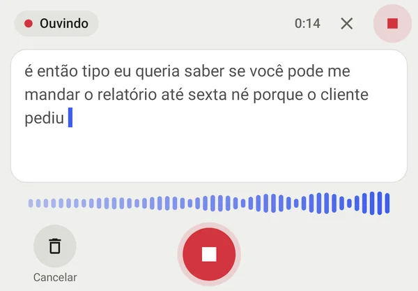
é então tipo eu queria saber se você pode me mandar o relatório até sexta né porque o o cliente pediu pra gente apresentar na reunião de segunda não pera terça de manhã
Gostaria de saber se você pode me enviar o relatório até sexta-feira, pois o cliente pediu que o apresentássemos na reunião de terça-feira pela manhã.
Como funciona
Dois modelos de IA trabalham em sequência no processador do aparelho. Enquanto você fala, o que já foi dito vai sendo transcrito nas pausas; quando você para, falta só o finalzinho.
Microfone a 16 kHz. O áudio fica só na memória e é apagado no fim de cada ditado.
é então tipo eu queria saber se você pode me mandar o relatório até sexta né
whisper.cpp Base, Small ou Large v3 Turbo, conforme a memória do aparelho.
Gostaria de saber se você pode me enviar o relatório até sexta-feira.
llama.cpp Gemma ou Qwen tiram vícios, repetições e autocorreções e acertam a gramática.
Em qualquer app: WhatsApp, Gmail, Notas, navegador. Não gostou? Um toque volta para o original.
Nenhum servidor envolvido. Não existe nuvem do teclado: a voz e o texto nunca passam pela internet.
Veja de perto
Capturas reais do teclado. Arraste para o lado para ver todas.
Reunião de terça
Levar os números do trimestre.
Ditando…
Para cliente@empresa.com.br
Assunto Relatório
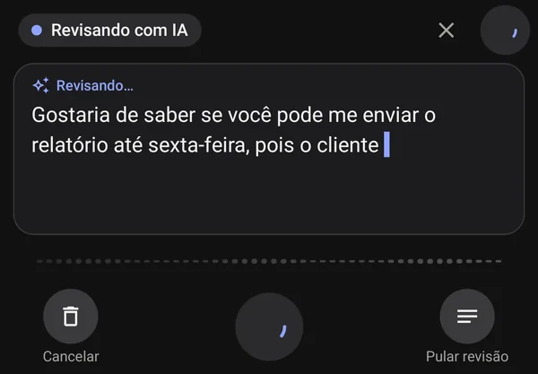
Digite o código enviado por SMS
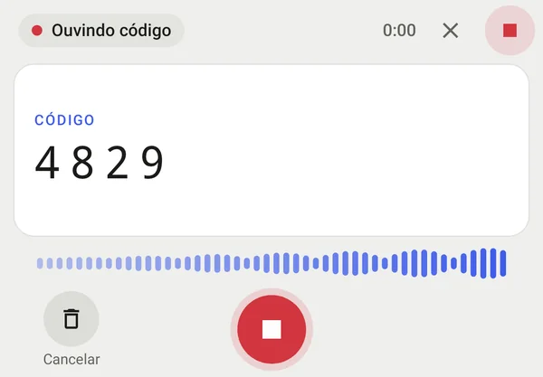
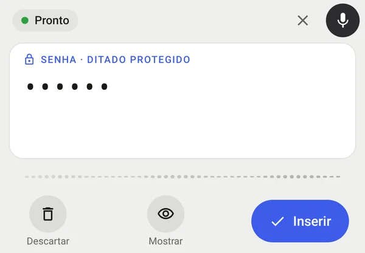
oi pessoal amanhã não vai ter aula por causa da chuva
Texto selecionado
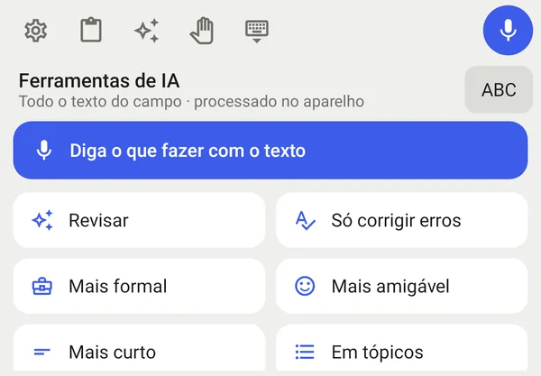
Você vem amanhã?
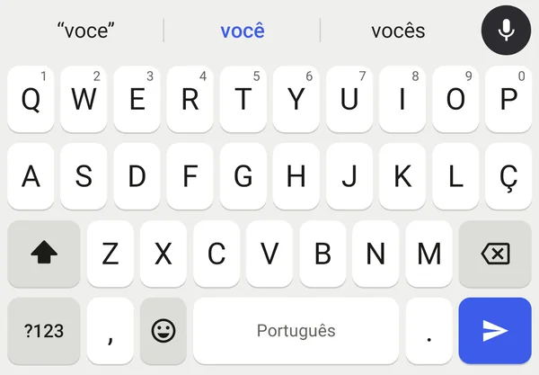
Tema escuro automático, que segue o do sistema.
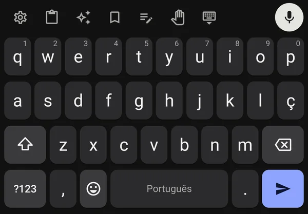
Teclado encostado no lado do polegar.
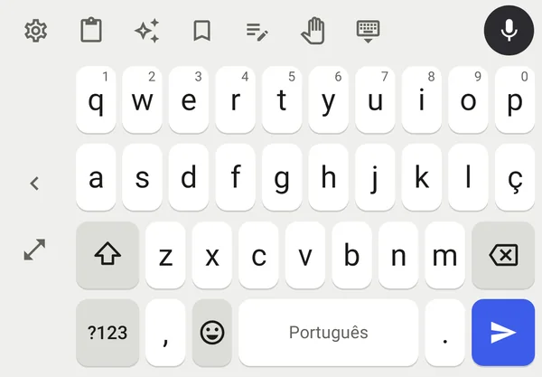
Recursos
Cada recurso existe para que falar seja mais rápido do que digitar, inclusive nas tarefas chatas.
Toque e segure o espaço: o teclado inteiro vira um trackpad, como no iPhone, para levar o cursor exatamente onde você quer. Com dois dedos, seleciona o texto. Para ditar, toque no microfone.
Em campos de código, o teclado entende sozinho que deve escrever só números.
Aparece oculta, não passa pela IA, não é salva e só entra no campo quando você confirma.
Selecione um trecho e escolha a ferramenta. Ou diga o que quer: “transforme num convite para o aniversário da Ana”.
Por três minutos o teclado oferece colar o que você copiou. Se houver um código, cola só os números.
Deslize o dedo pelas letras sem soltar e a palavra aparece, com acentos e ç. As outras opções ficam na barra; apagar logo em seguida remove a palavra inteira.
Em abas anônimas e em apps de privacidade, o teclado entra em modo privado e mostra um símbolo de óculos ao fundo. Nada é aprendido nem guardado. Em qualquer app, um toque no botão de óculos liga o modo.
Acentos no toque longo, ç na fileira, autocorreção em português, cursor no espaço, apagar palavras deslizando, emojis e área de transferência.
Texto impecável para o trabalho, natural para o dia a dia ou leve para conversas. O teclado pode escolher o tom conforme o app.
Cadastre nomes, empresas e jargões. O ditado, a revisão e as sugestões passam a escrever do jeito certo.
Logo após o ditado, um botão troca o texto revisado pelo que você disse, palavra por palavra. Também dá para desfazer.
Quando sai um modelo melhor, o app avisa e baixa com um toque. Nada é baixado sem você pedir.
Teste de velocidade
O teste de velocidade roda cada modelo instalado no seu aparelho com o mesmo áudio e o mesmo ditado, e mostra quanto tempo você esperaria pelo texto pronto em cada combinação de voz e revisão.
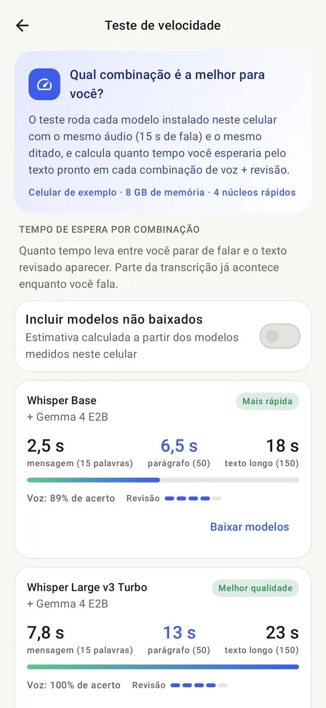
O aplicativo
O app guia a instalação, recomenda os modelos certos para a memória do seu celular e deixa você experimentar o ditado na hora.
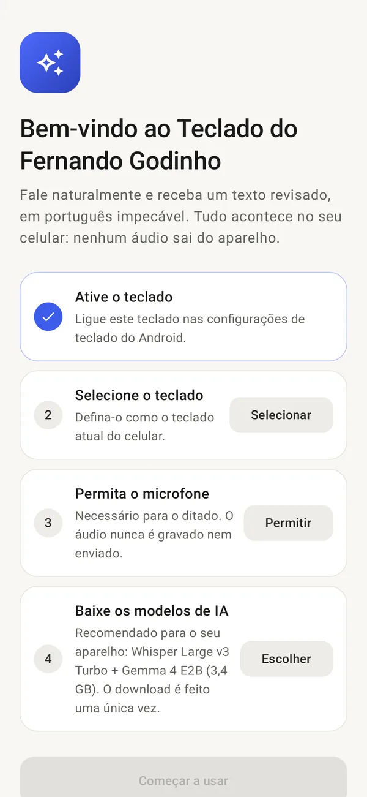
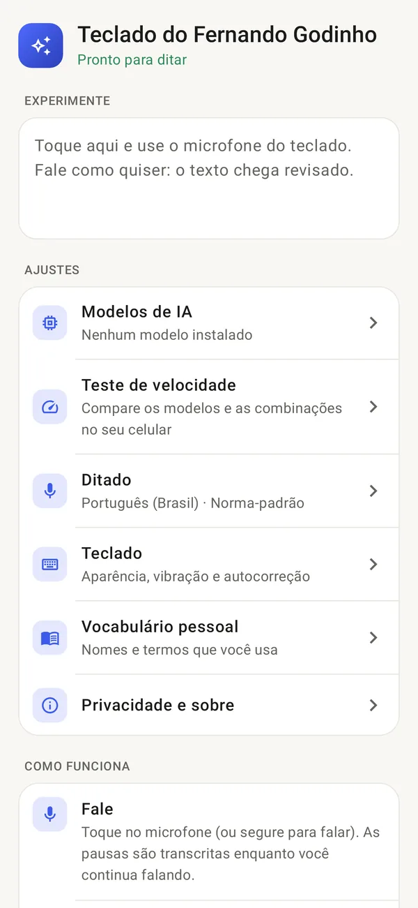
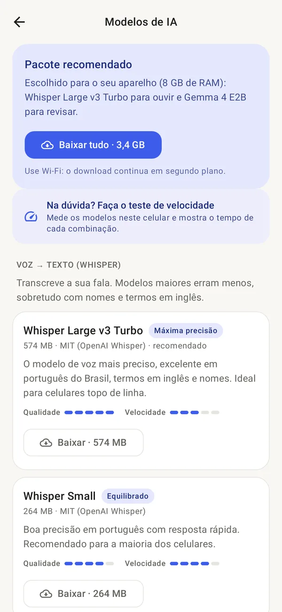
Privacidade
Teclado vê tudo o que você escreve. Por isso este foi construído para que a sua voz e o seu texto nunca saiam do celular.
Os únicos endereços que o app pode acessar
huggingface.comodelos de IA*.hf.codownload dos modelos{{PAGES_HOST}}avisos de atualizaçãosua TVsó na rede da casa, só o texto da tela “Digitar na TV”qualquer outrobloqueado no código, inclusive em redirecionamentos| Permissão | Para quê |
|---|---|
RECORD_AUDIO | Ouvir enquanto você dita |
INTERNET | Baixar modelos e checar atualizações |
POST_NOTIFICATIONS | Mostrar o progresso do download |
FOREGROUND_SERVICE_DATA_SYNC | Continuar o download em segundo plano |
VIBRATE | Vibração ao tocar nas teclas |
WAKE_LOCK | Não deixar o download parar no meio |
RECEIVE_BOOT_COMPLETED | Reagendar a busca por atualizações |
Compatibilidade
Android 8.0 ou superior com processador de 64 bits. O app recomenda os modelos certos para a memória do seu aparelho e usa as instruções mais rápidas do processador dele.
até 3 GB
Whisper Base
Qwen 3.5 0.8B
0,9 GB de download
4 a 5 GB
Whisper Small
Qwen 3.5 2B
1,5 GB de download
6 a 7 GB
Whisper Small
Gemma 4 E2B
3,1 GB de download
8 GB ou mais
Whisper Large v3 Turbo
Gemma 4 E2B
3,4 GB de download
Celulares Huawei e Honor (EMUI) funcionam normalmente. Para ditar senhas, desative o “Teclado seguro” do sistema nas configurações de idioma e entrada.
Instalar
Toque em “Baixar” nesta página, pelo celular. Se o Android pedir, permita instalar apps do navegador.
Abra o app e toque em “Ativar”. Ele leva você direto à tela certa das configurações.
Necessário para o ditado. O áudio nunca é gravado em arquivo nem enviado.
Um toque baixa o pacote recomendado. Use Wi-Fi: são de 0,9 a 3,4 GB, uma única vez.
Está no computador? Aponte a câmera do celular para abrir esta página nele.
Temas
Do Clássico, que acompanha o claro e o escuro do celular, ao Alto contraste. Cada cor passa por um teste automático de legibilidade antes de entrar no app.
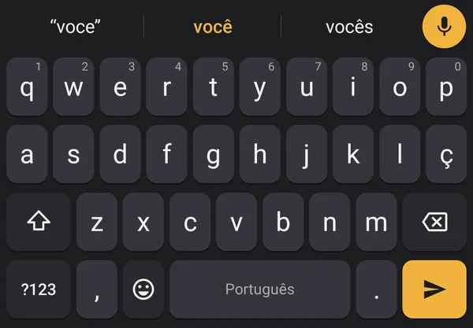
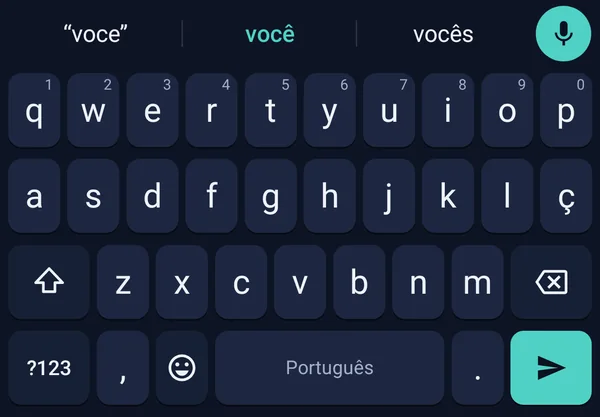
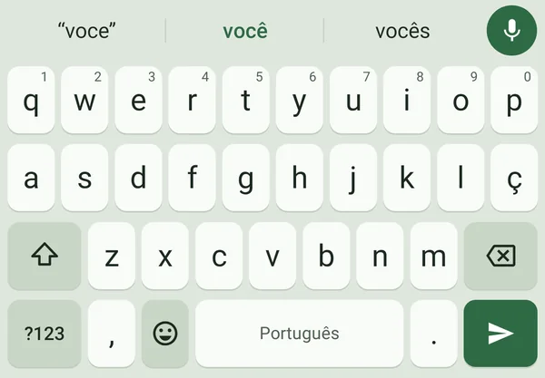
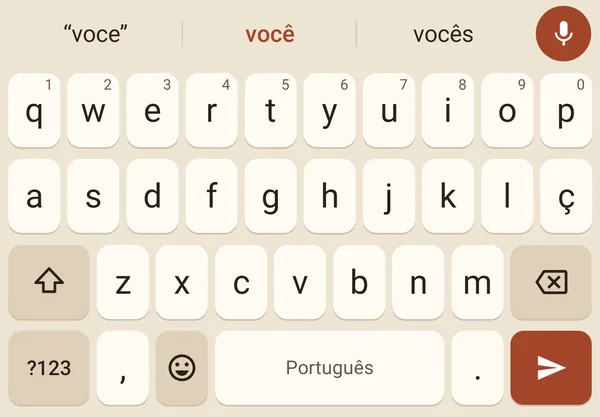
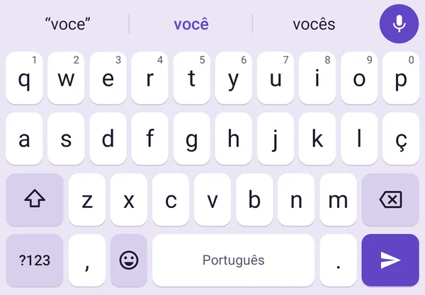
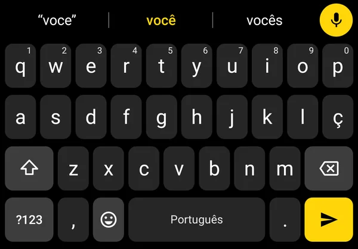
Teclado na TV
A TV abriu a busca do YouTube, da Netflix ou do Globoplay? Uma notificação aparece no celular: toque, escreva ou fale, e o texto surge na TV na hora. A conexão é direta pela sua rede Wi-Fi, sem internet.
Na primeira vez, a TV pede para você permitir a conexão (ou mostra um código). TVs Hisense com VIDAA e Panasonic ainda não são compatíveis.
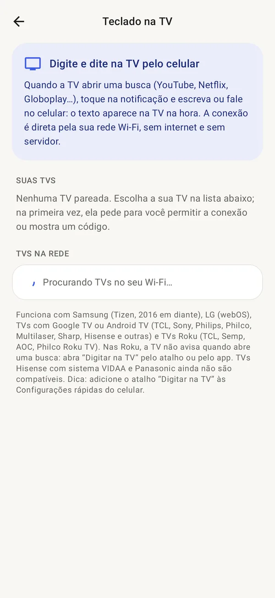
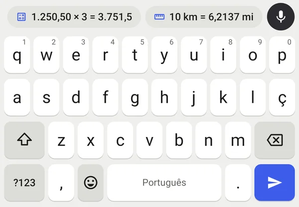
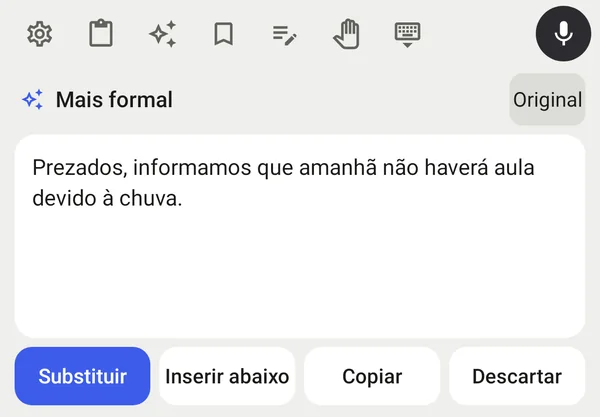
Ferramentas
Apoie o projeto
Este teclado é um projeto de Fernando Godinho, apresentado no canal dele no YouTube. Não tem anúncios, não tem assinatura e não vende dados. Se ele facilita o seu dia, você pode ajudar o projeto a continuar com um Pix de qualquer valor.
Chave Pix (e-mail)
fjgs@outlook.com
No app do seu banco: Pix › Pagar com chave. Confira o nome Fernando Godinho antes de confirmar. A contribuição é voluntária e não muda nada no app.
Dúvidas
Este APK é compilado automaticamente a partir do código público no GitHub e assinado sempre com a mesma chave. Confira o SHA-256 no rodapé desta página. O app não pede acesso a contatos, arquivos, localização nem SMS.
O app já recomenda um pacote para a memória do seu celular. Se quiser comparar, abra “Teste de velocidade”: ele mede os modelos no seu aparelho e mostra o tempo de cada combinação para mensagens curtas, parágrafos e textos longos.
Samsung com Tizen (2016 em diante), LG com webOS, TVs com Google TV ou Android TV (TCL, Sony, Philips, Philco, Sharp, Hisense e outras) e TVs Roku (TCL, Semp, AOC, Philco). O celular e a TV precisam estar na mesma rede Wi-Fi. TVs Hisense com VIDAA e Panasonic ainda não são compatíveis.
Sim. Depois de baixar os modelos, o ditado, a revisão e o teclado funcionam totalmente offline.
Só enquanto você dita. Os modelos ficam carregados por alguns minutos após o uso, para responder rápido, e depois a memória é liberada. Você ajusta esse tempo nas configurações.
Sim. O padrão é português do Brasil, com a melhor precisão, mas você pode ditar em inglês, espanhol, francês, italiano e alemão, ou deixar o idioma em detecção automática.
Por enquanto a distribuição é por aqui. O app já está preparado para lojas como a Google Play e a AppGallery, com o nome traduzido em mais de 70 idiomas.